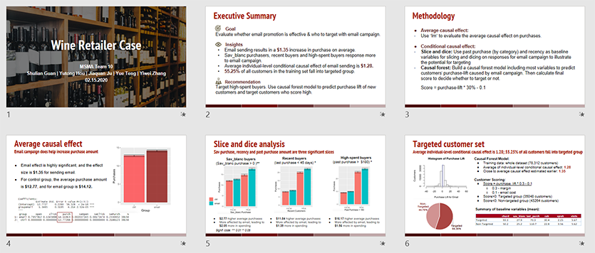
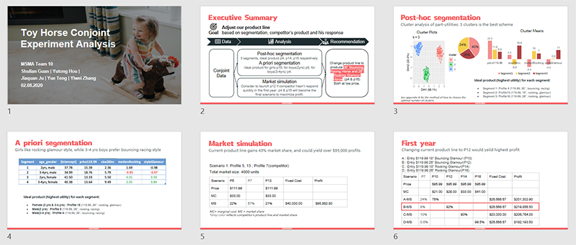
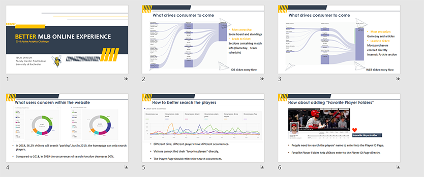
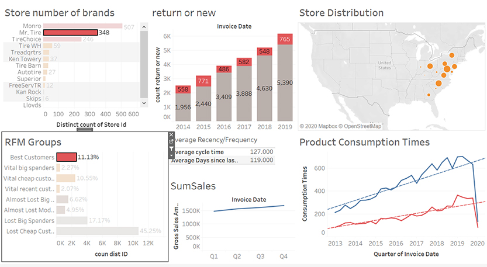
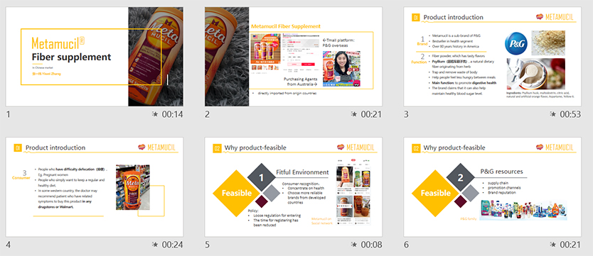

Wine Retailer Email Marketing Evaluation
02/15/2020

In this case, I conducted regression to analyze average causal effect of one Email Campaign. In order to find the targeted group, I applied slice and dice analysis and ran random forest model to score each individual.
keywords: R, Slice and Dice Analysis, Random Forest
Toy horse product line revitaliztion
02/08/2020

Based on conjoint data from market research, I used Post-hoc segmentation and A priori segmentation to recommend ideal products for different customer groups. As a result, I predicted both short-run and long-run profits through market simulation under competition.
keywords: R, Post-hoc Segmentation, A priori Segmentation, market Simulation
MLB Website Online Experience Improvment
10/10/2019

In order to improve MLB online customer journey, we analyzed key metrics that drive traffic to MLB website using Adobe Analytics, and identified problems based on users concerns. Finally, we gave the recommendation for improving customer online experience.
keywords: Adobe Analytics, Online Customer Journey, traffic Analysis
Monro Customer Value Analysis
04/27/2020

I cleaned 7-years consumption data from Monro.Inc, transferred it into an individual level and built RFM model in view of business needs. Based on the result, I created a Tableau Dashboard for interactive and made a prediction on the most valuable customers.
keywords: Tableau, R, RFM model, Customer Value
Metamucil Fiber Supplement Chinese Market Launch strategy
01/17/2019

In this project, I demonstrated the future entry plan of Metamucil Fiber Supplement in the Chinese Market, including feasibility analysis and launch strategy.
keywords: feasibility analysis, Launch Strategy, Product Map, 4P strategy